Data Analysis and Research
Using Smell PGH reports and air quality data from local agency monitoring stations, we developed a statistical model to predict upcoming smell events and send push notifications to inform communities. The dataset and the code are publicly available on GitHub. Our analysis indicated that smell events in Pittsburgh are related to the joint effect of wind directions and hydrogen sulfide readings. This research shows that engaging residents in documenting their experiences with pollution odors can help identify local air pollution patterns. To learn more, a preprint of our research paper can be downloaded here. The full citation of the research is shown below:
Yen-Chia Hsu, Jennifer Cross, Paul Dille, Michael Tasota, Beatrice Dias, Randy Sargent, Ting-Hao (Kenneth) Huang, and Illah Nourbakhsh. 2019. Smell Pittsburgh: community-empowered mobile smell reporting system. In Proceedings of the 24th International Conference on Intelligent User Interfaces (IUI '19). ACM, New York, NY, USA, 65-79. DOI: https://doi.org/10.1145/3301275.3302293
Distribution of Smell Reports and Users by Month
Smell Pittsburgh was launched in September 2016. To understand user engagement over time, we aggregate the number of smell reports and unique users by month (for 2017, 2018, and 2019). We estimate the number of unique users by combining the results from Google Analytics and our customized tracker in the system. Additionally, we also compute the number of active users who have submitted smell reports within the last 7 and 30 days as engagement indicators. In general, user engagement in 2019 (17,974 reports, 6,406 users) was significantly higher than in 2018 (9,195 reports, 2,645 users) and in 2017 (8,112 reports, 2,237 users).
Year 2019
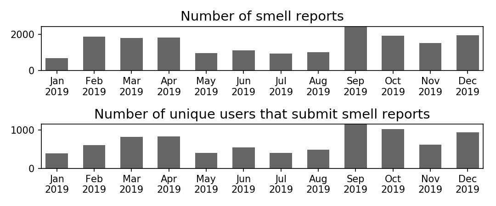{kind=link}
Year 2018

Year 2017
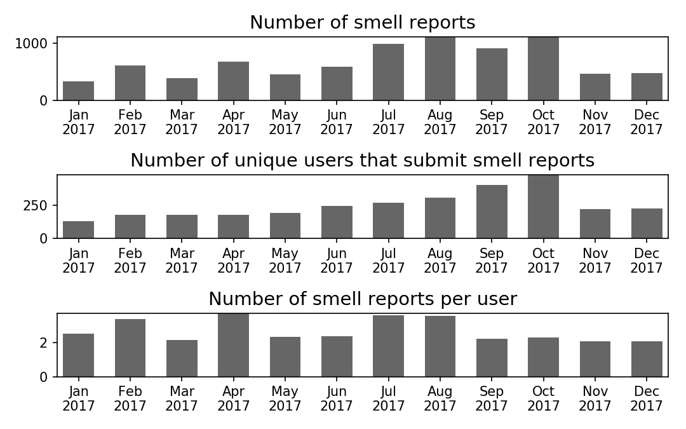{kind=link}
The following figures show the distribution of ratings in the smell reports for the year 2017, 2018, and 2019. Our users tend to report bad odors with ratings larger than two, especially for 2019.
Distribution of smell ratings (2019)
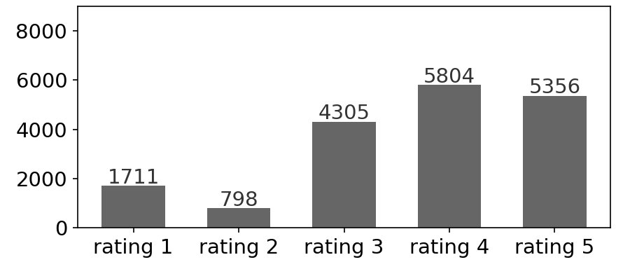{kind=link}
Distribution of smell ratings (2018)
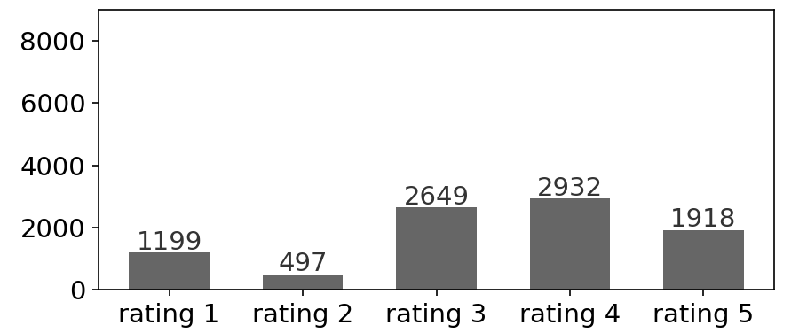{kind=link}
Distribution of smell ratings (2017)
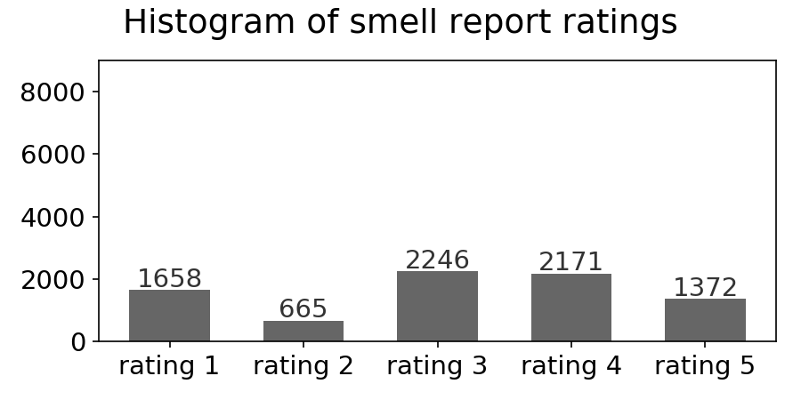{kind=link}
Distribution of Smell Reports Aggregated by Time
To investigate the concentration of smell reports across time, we compute the average number of smell reports per day, aggregated by hour of day and day of week. The following figures show that most reports are submitted during morning hours, and rarely at nighttime. For 2017 and 2018, more smell reports are received during weekdays compared to weekends. Reports in 2018 and 2019 were more evenly distributed, while the 2017 reports were concentrated on Wednesday mornings.
Average number of reports per day (2019)
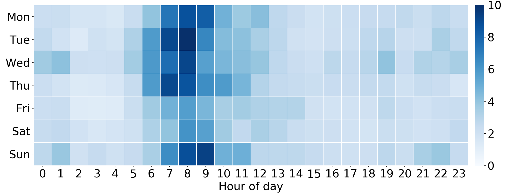{kind=link}
Average number of reports per day (2018)
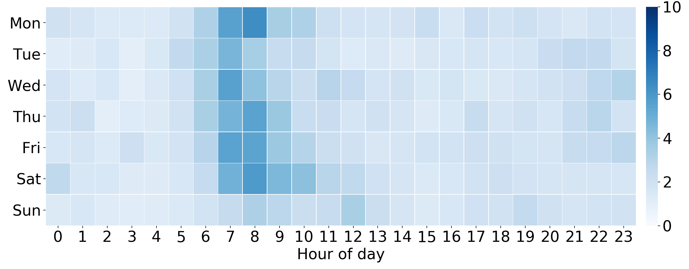{kind=link}
Average number of reports per day (2017)

Moreover, we compute the average number of smell reports per day, aggregated by hour of day and month. For the year 2017, 2018, and 2019, the reports were concentrated in different months, which shows different pollution and engagement patterns.
Average number of reports per day (2019)
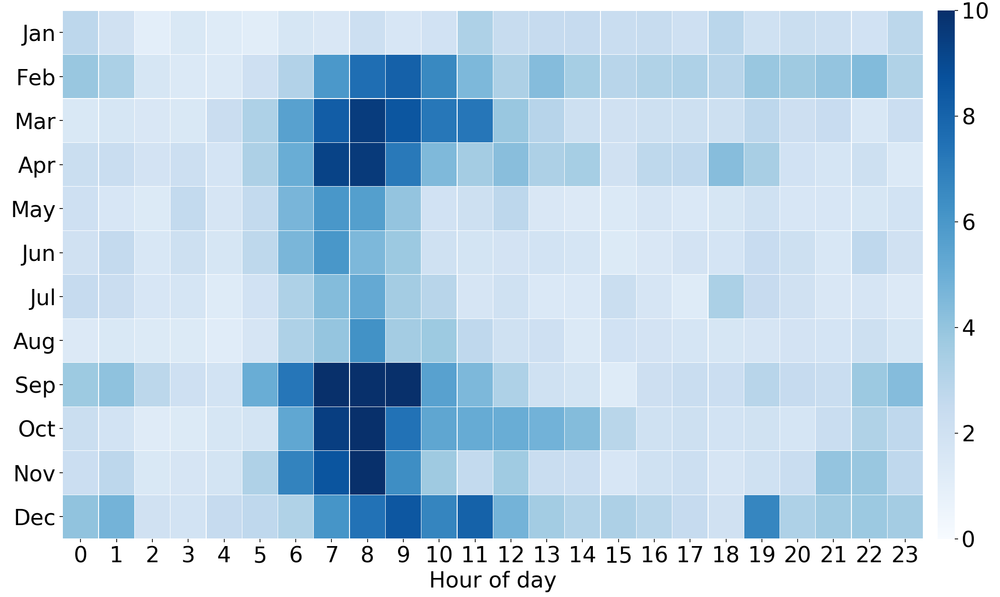{kind=link}
Average number of reports per day (2018)
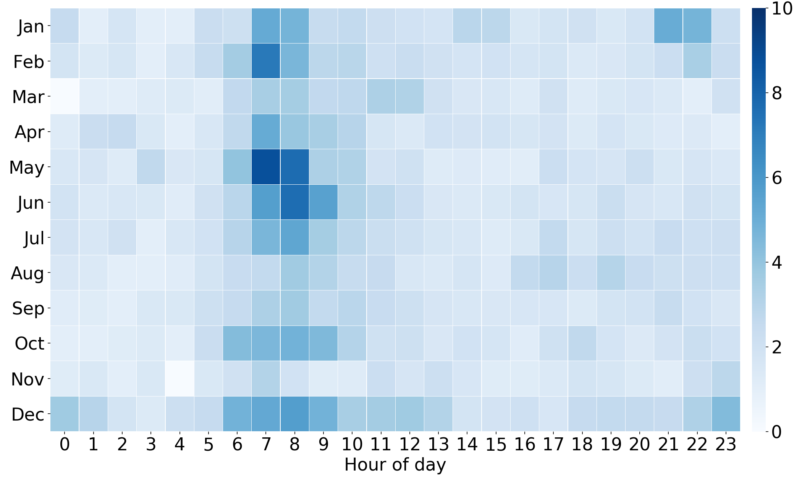{kind=link}
Average number of reports per day (2017)
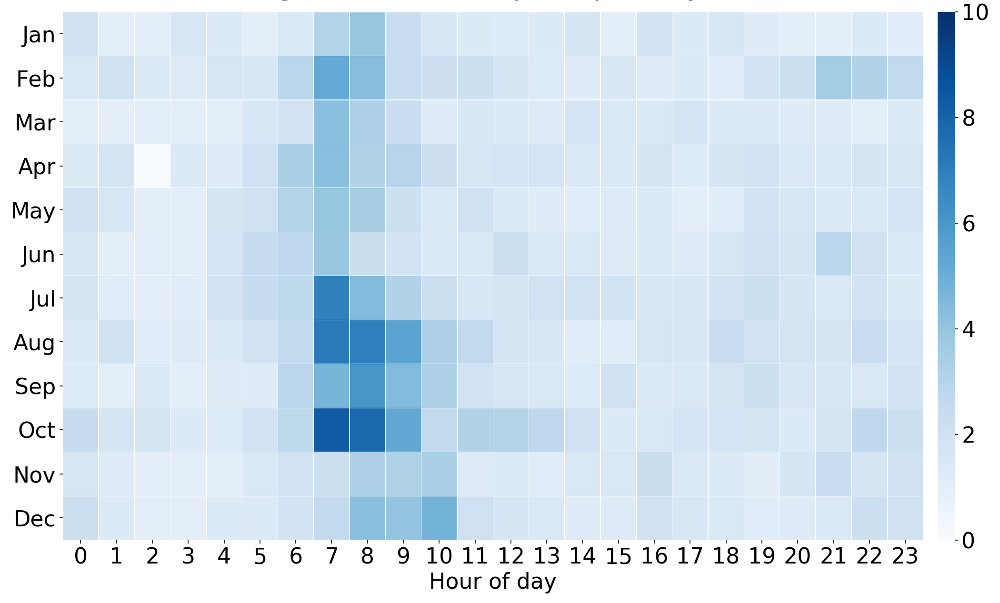{kind=link}
Distribution of Smell Reports Aggregated by Geographical Region
The following interactive maps show the distribution of smell reports by Pittsburgh area zipcodes for 2017, 2018, and 2019. A darker color indicates more reports in an area. Note that this map indicates citizen engagement with the Smell PGH app, but does not necessarily represent the severity of pollution. In general, citizen engagement is increased over the three years, especially from 2018 to 2019.
Number of reports by region (2019)
Number of reports by region (2018)
Number of reports by region (2017)
Content Analysis of Smell Reports
To identify critical topics in citizen-contributed smell reports, we analyzed the frequency of words (unigram) and phrases (bigram) in the text fields. The following figures show that the majority of user comments described industrial pollution odors and symptoms related to air pollution exposure. Odor descriptions and symptoms were frequently linked to hydrogen sulfide, which has a "rotten egg" smell and is known to cause symptoms of headaches, dizziness, eye irritation, sore throat, cough, nausea, and shortness of breath (Reiffenstein et al., 1992; Guidotti, 2010).
Content analysis (2019)
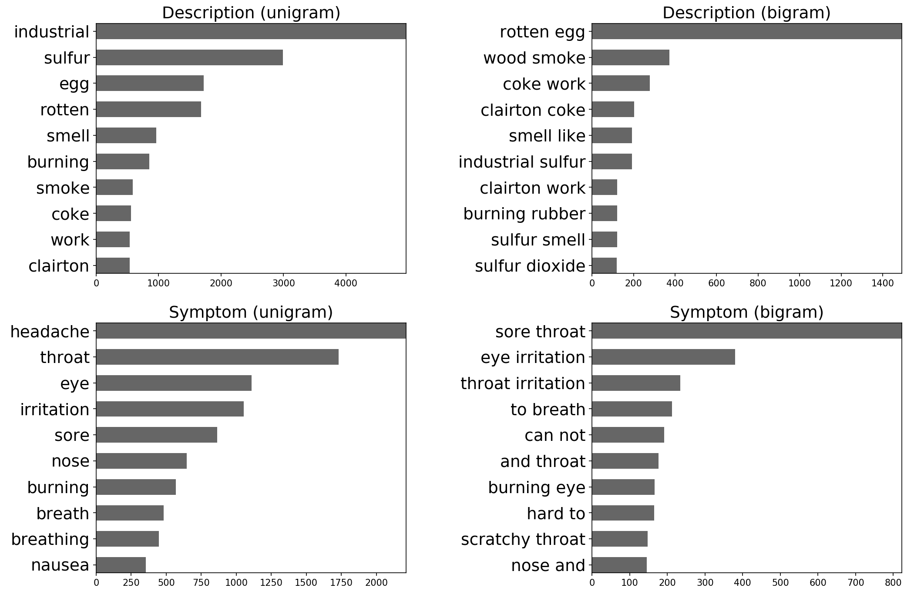{kind=link}
Content analysis (2018)

Content analysis (2017)
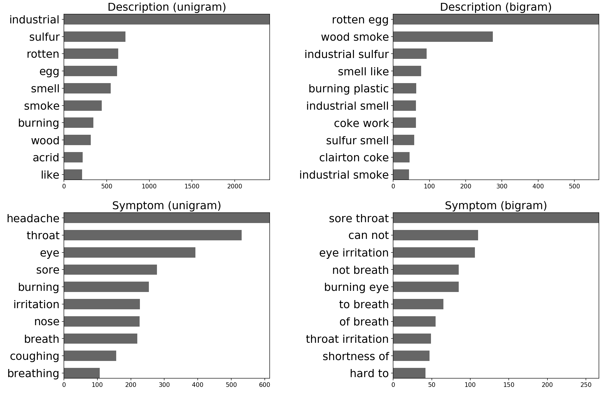{kind=link}
Relationship between Smell Reports and Pollutants
Comments from Smell PGH users and Pittsburgh community members suggested that hydrogen sulfide might be the primary source of pollution odors in the area. We used statistical methods (described in the figure below) to analyze the relationship between a subset of smell reports and hydrogen sulfide concentrations, as measured by county monitors in the region. Note that this identified relationship does not imply causation.
Pollution pattern analysis (10/31/2016 to 9/27/2018)
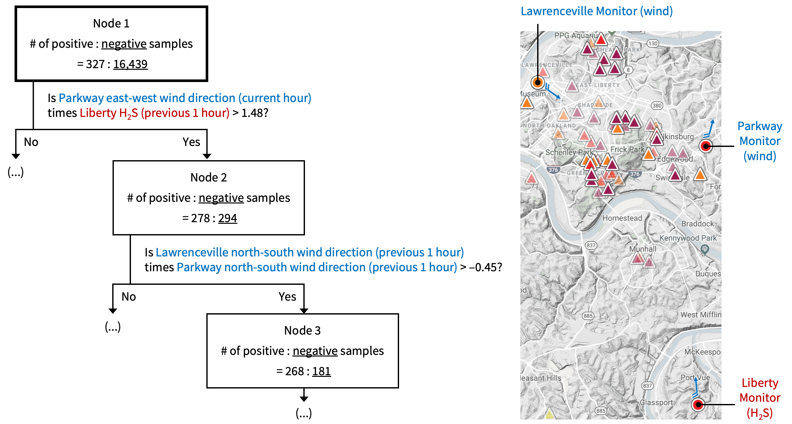{kind=link}
The decision tree (Quinlan, 1986) depicted above is analogous to how a medical doctor may diagnose a patient. The top level of the tree shows the most influential predictor, which is the interaction between wind direction at the Parkway monitoring station and hydrogen sulfide concentration at the Liberty monitoring station. The Allegany County Health Department operates these monitoring stations. Based on this finding, we investigated this relationship further, by date.
We compare two metrics that are related to smell reports and data from county air quality monitors, respectively. The first metric shows the sum of smell ratings for each day, excluding reports with ratings that are less than three. A darker color indicates a larger volume of smell reports on that date. The second metric shows the maximum concentration of hydrogen sulfide per day, weighted by the contributions of the wind directions (from the south and the east) at both the Parkway and Liberty monitoring stations. The formula for each hourly measurement is:
where represents the concentration of hydrogen sulfide in parts per billion (ppb) of the Liberty monitoring station,
is the wind direction at the Liberty monitoring station,
and
is the wind direction at the Parkway monitoring station.
A darker color in the second metric indicates a larger concentration of hydrogen sulfide in the area.
The correlation between these two metrics (the sum of smell ratings and the maximum weighted concentration of hydrogen sulfide per day) is 0.59 in 2019, 0.64 in 2018, and 0.65 in 2017.
This indicates that hydrogen sulfide was a significant driver of smell reports in these three years.
Sum of smell ratings by date (2019)
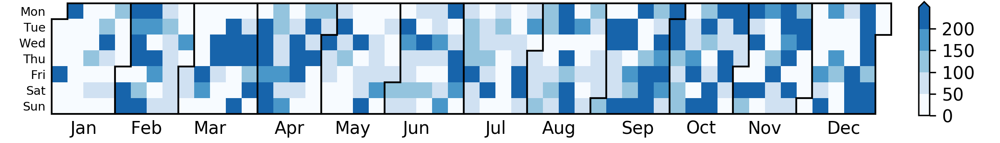{kind=link}
Maximum of weighted hydrogen sulfide concentration by date (2019)
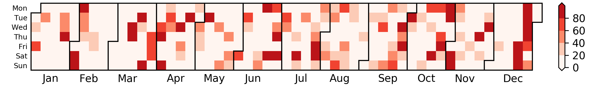{kind=link}
Sum of smell ratings by date (2018)
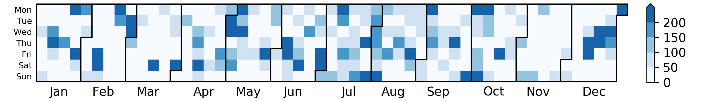{kind=link}
Maximum of weighted hydrogen sulfide concentration by date (2018)
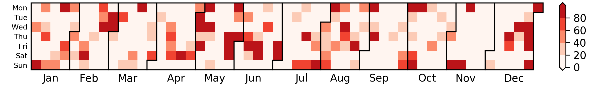{kind=link}
Sum of smell ratings by date (2017)
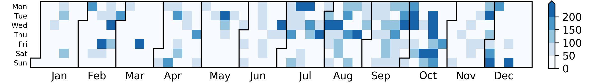{kind=link}
Maximum of weighted hydrogen sulfide concentration by date (2017)
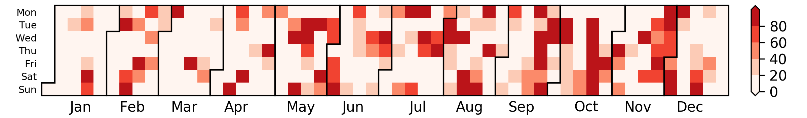{kind=link}